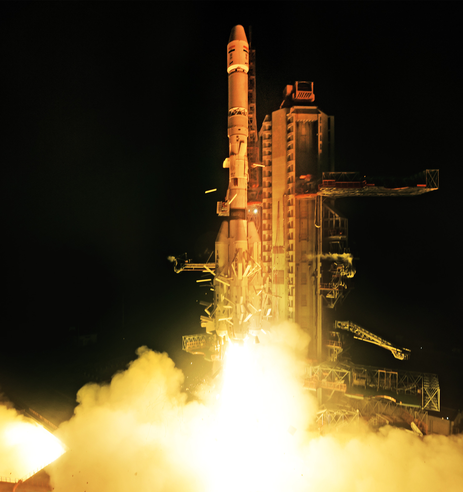

Space technology in the service of humankind.
ISRO empowers India through space technology — enabling communication, weather forecasting, disaster management, and scientific exploration. From Chandrayaan to Mars Orbiter, ISRO proves that space is for everyone.
Recent Updates →
........ The PSLV-C61 / EOS-09........
This mission, launched by ISRO on May 18, 2025, carried the EOS-09 (RISAT-1B) satellite into a sun-synchronous polar orbit. The satellite, weighing around 1,700 kg, is equipped with a C-band Synthetic Aperture Radar (SAR-C) capable of high-resolution, all-weather, day-and-night imaging. Designed for agriculture, forestry, water resources, and disaster management, EOS-09 can operate in five imaging modes with resoluti ons up to 1 meter. The PSLV-C61 marked the 63rd flight of the PSLV and the 27th in its XL configuration. The mission also featured debris mitigation strategies, including fuel for de-orbiting at end-of-life to reduce space junk.

........ The GSLV-F15 / NVS-02........
This mission was launched by ISRO on January 29, 2025, from the Second Launch Pad at Sriharikota, placing the NVS-02 navigation satellite into a Geosynchronous Transfer Orbit (GTO). Weighing approximately 2,250 kg, NVS-02 is part of the NavIC (Navigation with Indian Constellation) system and is equipped with payloads operating in L1, L5, and S bands, a C-band transponder, and a rubidium atomic clock to improve timing accuracy. The mission aimed to enhance India's regional navigation capabilities. While the satellite successfully reached GTO and deployed its solar panels, an oxidizer valve issue occurred during orbit-raising, preventing it from reaching its intended final geostationary orbit.
.......The PSLV-C60 / SPADEX .......
This mission was launched by ISRO on **December 30, 2024**, from Sriharikota, carrying two identical satellites—**SDX-01 (Chaser)** and **SDX-02 (Target)**—each weighing **220 kg**, into a **470 km circular orbit**. This mission marked **India’s first in-space autonomous docking demonstration**, where the Chaser successfully docked with the Target, testing crucial technologies like **rendezvous, docking mechanisms**, and **power transfer**. It also featured **POEM-4**, which used the PSLV’s spent fourth stage as an experimental platform for microgravity research with **24 payloads**. With SPADEX, India became the **fourth country** in the world to demonstrate this advanced space capability.Address
Headquarters, Antariksh Bhavan, New BEL Road Bengaluru-560 094.
Email : icrb@isro.gov.in
Phone : +91 8022172294/96
- RTI
- Feedback
- Contact us
- FAQ
- Website Policy
- Copyright Policy
- Hyper Linking Policy
- Terms of Use
- Archives
- Web Information Manager
- Space Policy
- Parliament Questions
- e-Saral Hindi Vakyakosh
- Related links
- Check Your 7th CPC Pension Revision Status
- Pensioners' Portal
- Site Map
- Help